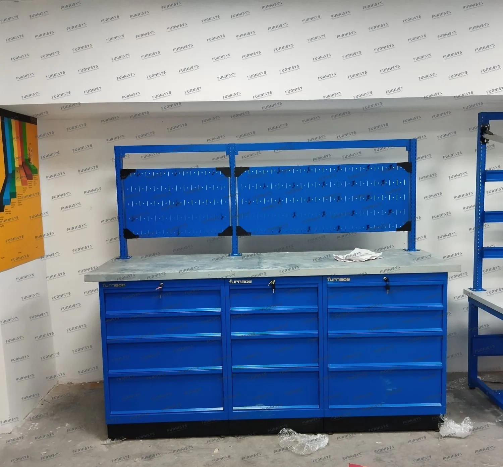
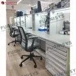
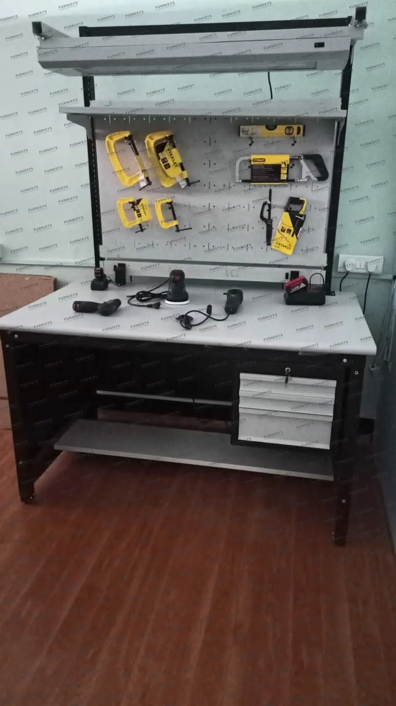
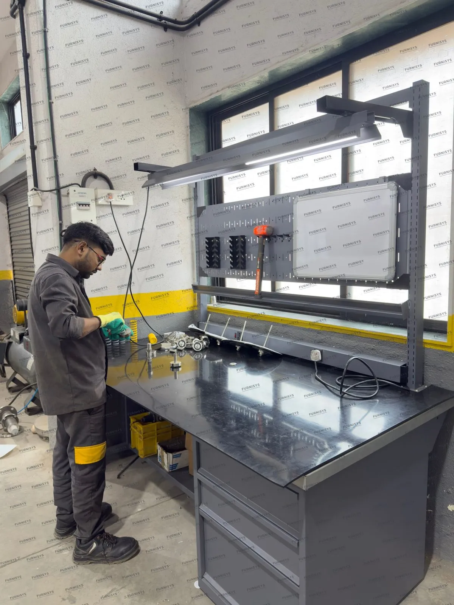
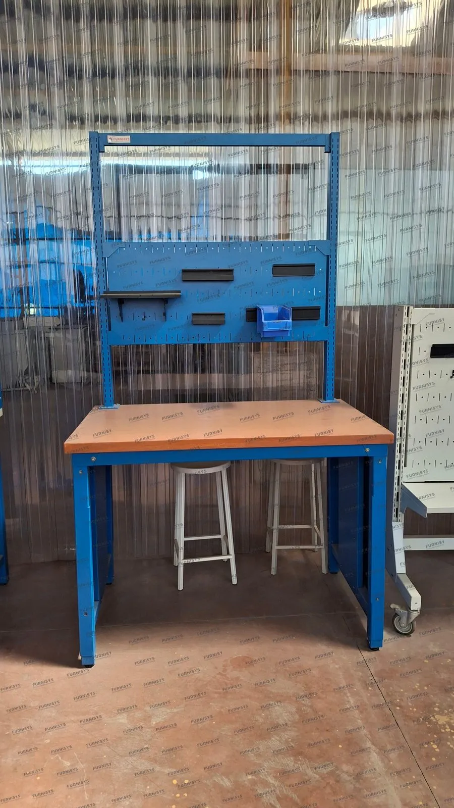
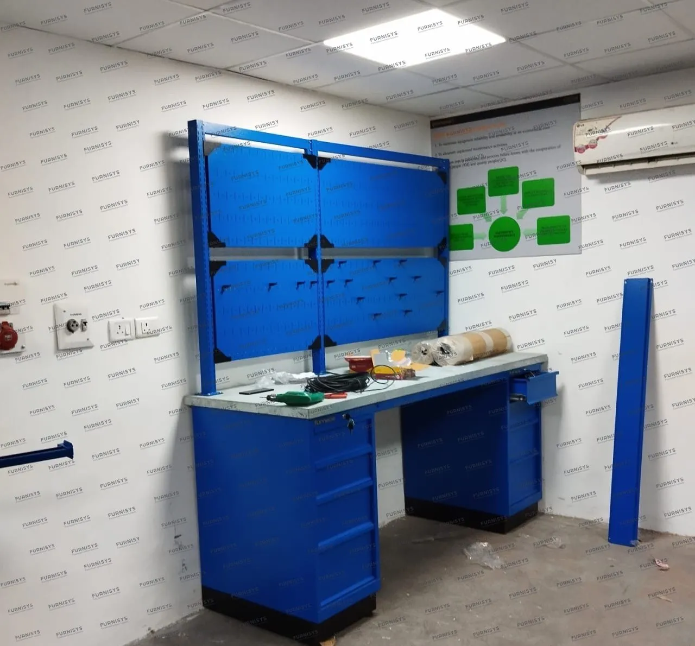
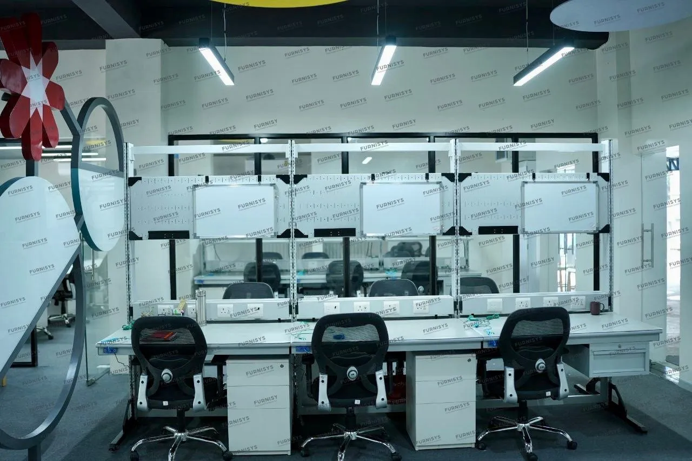

Transforming R&D Labs in the Oil & Gas Industry with Modular Workstations

Did you know? How a Newly Built Lab Setup Was Streamlined with Configurable Workbenches Across Testing Zones
In India’s oil & gas manufacturing hubs like Navi Mumbai, Gujarat, and Tamil Nadu, R&D labs play a crucial role in driving innovation and ensuring reliability in harsh operational environments. Whether it's validating the strength of downhole tools or assessing the durability of PCBs used in high-temperature settings, precision testing environments are non-negotiable. When a globally active oilfield services company sought to build a brand-new R&D facility in Rabale, the challenge wasn’t just about furniture, it was about creating a lab ecosystem.
This blog explores how Furnisys delivered modular lab workstation solutions tailored to Preparation, Material Testing, and PCB Validation zones, meeting the stringent demands of lab users, decision-makers, procurement officers, and HSE advisors. The approach not only reflected a deep understanding of technical needs but also ensured compliance, safety, and space optimization, making it a use case blog for workstations for oil and gas R&D labs.
The Challenge: Building an R&D Lab from the Ground Up
Setting up a new lab isn’t just about fitting tables and equipment. For a R&D Lab Manager responsible for configuring a 6,000 sq. ft. space, the priority was to visualize the layout, integrate machinery, and meet both safety and ergonomic needs. He needed a supplier who could help align user requirements, optimize lab space, and deliver R&D testing lab setup options that were application-specific.
Meanwhile, the Lab Supervisor, the primary user, wanted tailored configurations across zones, such as an ESD workbench for PCB testing, a sample preparation workbench for metallurgy, and robust storage for day-to-day tools. The Procurement Officer required technical clarity and commercial alignment to finalize vendors, and the HSE Advisor demanded seamless integration of safety protocols into both product design and installation.
Furnisys stepped in not just as a furniture provider, but as a space planning and R&D lab solutions partner.
Zone 1: Preparation Area – Rugged, Ergonomic, and Efficient

This zone was tasked with hosting slicing machines, abrasive cutters, furnaces, and polishing tools, critical to initial material testing and processing. Furnisys proposed a Heavy-Duty Lab Workbench for Testing Equipment from the Pro Series, fitted with a Stainless Steel Workbench for this area, ensuring chemical resistance and durability.
Tip: Click on the image to get more product information.

Heavy Duty Pro Workbench

Key Features:
- Load-bearing capacity of 860 kg to 1000 kg to mount equipment like the hot mount press and grinder
- Integrated with storage cabinets for tools and consumables
- SS surface ideal for heavy use and easy cleaning
Focus Keywords:
Sample Preparation Workbench for Metallurgy, Stainless Steel Workbench for R&D Labs, Workbenches for Preparation Area, Modular R&D Furniture
Zone 2: Rubber & Metal Testing – Precision Meets Durability

In this area, tests on elastomers and metals were performed using Universal Testing Machines (UTM), FTIR, TGA, and DSC equipment. Furnisys proposed configurable Heavy duty UTM workbenches, complete with corrosion-resistant workstation surfaces that could withstand heat, pressure, and chemical exposure.

Light Duty Base Series Workbench with SS worktop

Scitec Series Technical workbench with HPL worktop

Heavy Duty Pro Series Workbench with SS worktop
- UTM Workbench for Material Testing with SS cladding with storage design
- Base Worbench for mounting pneumatic specimen cutting press
- Workbenches for FTIR, DSC, and TGA Machines, fitted with HPL worktops
- Scitec Workstations mounted with Markerboards and tackboards on the link uprighter to display SOPs and test parameters in real time and also configured with HPL Worktops
- Footrests to reduce fatigue during long test cycles
For auxiliary tasks in the PCB testing area, Flexi Workstations were recommended as adaptable modular setups designed to support a wide range of technical activities. A Flexi Workstation, often configured as a back-to-back workstation, is a highly configurable lab furniture system that allows users to reconfigure components like drawers, power units, shelves, and tool rails based on specific workflow needs. These workstations featured hanging drawers for tool storage and integrated power outlets.
The Senior Engineering Manager particularly appreciated the proactive design coordination and space optimization strategy, while the Lab Supervisor was able to propose 2D/3D visuals to management, accelerating approvals.

Back to Back Workstation
Focus Keywords:
Universal Testing Machine Workbench, Material Testing Lab Furniture, Thermal and Chemical Testing Workstations, Workbenches for FTIR DSC and TGA Machines, Ergonomic Lab Furniture for Testing Labs, Modular Lab Workstations for Material Testing
Zone 3: PCB Testing Area – Static Safety and Workflow Precision

This zone dealt with climate-controlled testing of printed circuit boards, which demanded electrostatic discharge (ESD) protection, tool access, and environmental control. Furnisys installed ESD workbenches from the Scitec Series, specially configured with PLW tops and ESD accessories, wrist starp, ESD mat and grounding block.
Scitec Series Technical workstation
- ESD-safe modular furniture for oil and gas industry.
- Integrated pegboards with screw driver holders, spanner tray and equipment tray for easy access to tools.
- And power for equipment like oscilloscopes and multimeters.
- Lab workstation with storage for delicate components and instruments.
- ESD Workstations positioned adjacent to climate chambers and ovens for thermal stress testing.
- On soldering workstation irons and heat guns are placed on the tabletop for easy access during PCB repairs.
- Desoldering pumps and tools are kept on shelves for organized and convenient use.
This lab workbench setup allowed safe analysis, testing, and refinement of PCB components. The Lab Supervisor highlighted the need for proper grounding and integrated accessories.
Focus Keywords:
Workstations for PCB Testing Area, ESD Workbench, Lab Workbench for High-Temperature Testing, FTIR Workbench Setup for Labs, Testing Workstation for Sealing Systems, Industrial Testing Workbenches.
Integrating Safety and Compliance from the Start
With the site being new, the Head HSE Advisor took extra care to enforce OHS policies. Furnisys collaborated closely to:
- Provide advance delivery schedules so safety briefings could be arranged
- Follow onsite unloading protocols
- Use compliant materials like chemical-resistant lab workbench tops and SS panels
The company appreciated that the vendor staff required minimal supervision, understood safety requirements, and were punctual with communication, helping the HSE team meet its zero-incident goals.
Focus Keywords:
Oil & Gas R&D Lab Workstation Solutions, Chemical-Resistant Lab Workbench, Lab Furniture for Downhole Tool Testing, Corrosion-Resistant Workstation for Labs
Supporting Accessories That Made a Difference
- Pegboards for vertical tool storage.
- Privacy panels to reduce distraction.
- Bin strips for storing small test parts.
- Screwdriver holders, footrests, monitor arms.
- Power rail mounting for safe electrical power supply.
Focus Keywords:
Configurable Lab Workbenches, Testing Station Design, Equipment Mounting Workbench, Scientific Equipment Table
Made in India with Global Standards
This project, executed in Navi Mumbai, stands as a scalable blueprint for similar facilities across Gujarat, Pune, Visakhapatnam, and Hyderabad, regions experiencing strong growth in oil & gas R&D.
Whether you’re building a lab from scratch or revamping your existing infrastructure, modular furniture systems like those from Furnisys can help you achieve ergonomic efficiency, space optimization, and full functional compliance.
Focus Keywords:
Laboratory Furniture Manufacturers in India, Oil & Gas Lab Infrastructure
Conclusion: Function Meets Form in Oil & Gas R&D Labs
Furnisys’s tailored solutions for the Preparation Area, Material Testing Zone, and PCB Testing Area went beyond simple product supply, they ensured that user expectations, safety compliance, and project timelines were all met with confidence.
From UTM workbenches to vibration-resistant lab furniture, the entire deployment showed how modular lab workstations for material testing and electronics validation can form the backbone of a high-performing R&D lab. And thanks to proactive coordination, technical understanding, and role-specific responsiveness, Furnisys enabled a lab that not only works today, but is future-ready.
Want to create a future-ready R&D lab?
Whether you're a Lab Supervisor seeking ergonomic ESD setups, a Senior Manager planning a new facility, or a Procurement Officer looking for budget-aligned solutions, our modular R&D furniture is built for you.